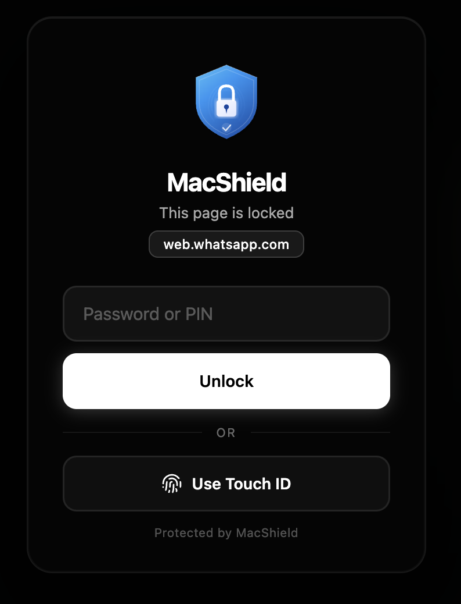

01
Lock macOS apps
Protect Messages, Mail, notes, finance tools, work apps, or any selected app with an overlay that appears during launch and app switching.
One security system for macOS apps and Chrome.
MacShield protects the desktop and the browser together: native app locks for macOS, Website Lock for Chrome, and privacy blur for sensitive conversations.
MacShield is structured around three clear jobs: cover private app content, blur sensitive conversations, and block chosen websites until the right person authenticates.
Protect Messages, Mail, notes, finance tools, work apps, or any selected app with an overlay that appears during launch and app switching.
Reduce shoulder-surfing risk by blurring sensitive chat content and revealing only the parts you actively choose to read.
Add custom domains to Website Lock, then require authentication before pages such as dashboards, mail, or social tools render.
Download the latest release, move MacShield to Applications, and launch it from the menu bar.
Enable the macOS permissions needed for app detection, overlays, blur, and optional watch proximity.
Select protected apps, configure blur behavior, and optionally add browser domains to Website Lock.
Unlock with Touch ID, Apple Watch proximity, or password fallback when protected content is accessed.
MacShield lives quietly in the menu bar and watches protected app launches and activations. When a protected app opens or returns to focus, MacShield covers the screen until the user authenticates.
Authorize with Touch ID or device biometric

The extension is structured around local Chrome storage, Web Crypto password hashing, WebAuthn where available, and CSS-based blur rules that do not read message content.
Keep messages and mail readable only when you intentionally reveal them.
Lock apps and browser sites without relying on cloud accounts or subscriptions.
Protect confidential chats, roadmaps, contracts, and internal dashboards during context switches.
Auto-lock or auto-close sensitive apps when you sleep, idle, or leave watch range.
No analytics, advertising SDKs, hosted accounts, or product telemetry pipeline. Protected app settings and extension preferences stay local.
Accessibility, Bluetooth, Screen Recording, Chrome storage, tabs, and all URLs are explained in plain language in the docs.
Credits are documented for MakLock, Sparkle, HotKey, Apple frameworks, Chrome APIs, Web Crypto, WebAuthn, and contributors.
Install, setup, browser extension, permissions, examples, architecture, troubleshooting, FAQ, contributing, and changelog.
Support categories, bug report guidance, troubleshooting flow, and response expectations for the open-source project.
Copyright, terms, privacy, ownership, dependency attribution, third-party rights, roadmap, and system health.
No. MacShield has no analytics, advertising SDKs, or hosted account service. See the privacy policy for exact local storage and permission details.
It needs app activation visibility to detect when protected apps launch or return to focus, so private content can be covered immediately.
Website Lock supports user-selected domains. To lock arbitrary domains before content renders, the lock guard must be allowed to run on all URLs.
The extension stores only a salted one-way hash, so there is no recovery backdoor. Remove and reinstall the extension to reset local extension state.
Security tools should be reviewed before use. Read setup, verify the source, enable only the features you need, then protect your first app.